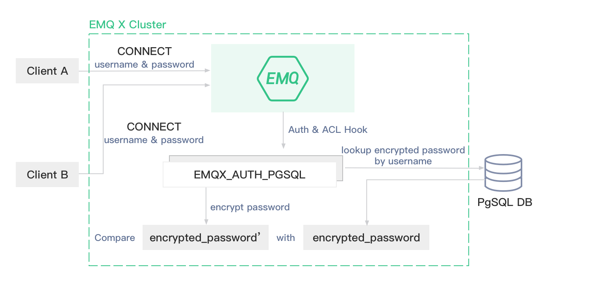
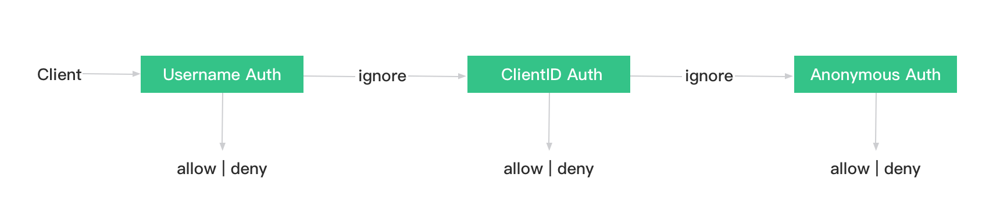

认证
身份认证是大多数应用的重要组成部分，MQTT 协议支持用户名密码认证，启用身份认证能有效阻止非法客户端的连接。
EMQ X Broker 中的认证指的是当一个客户端连接到 EMQ X Broker 的时候，通过服务器端的配置来控制客户端连接服务器的权限。
EMQ X Broker 的认证支持包括两个层面：
MQTT 协议本身在 CONNECT 报文中指定用户名和密码，EMQ X Broker 以插件形式支持基于 Username、ClientID、HTTP、JWT、LDAP 及各类数据库如 MongoDB、MySQL、PostgreSQL、Redis 等多种形式的认证。
在传输层上，TLS 可以保证使用客户端证书的客户端到服务器的身份验证，并确保服务器向客户端验证服务器证书。也支持基于 PSK 的 TLS/DTLS 认证。
本章节介绍了 EMQ X 支持的认证方式以及对应插件的配置方法。
认证方式
EMQ X 支持使用内置数据源（文件、内置数据库）、JWT、外部主流数据库和自定义 HTTP API 作为身份认证数据源。
连接数据源、进行认证逻辑通过插件实现的，每个插件对应一种认证方式，使用前需要启用相应的插件。
客户端连接时插件通过检查其 username/clientid 和 password 是否与指定数据源的信息一致来实现对客户端的身份认证。
EMQ X 支持的认证方式：
内置数据源
使用配置文件与 EMQ X 内置数据库提供认证数据源，通过 HTTP API 进行管理，足够简单轻量。
外部数据库
外部数据库可以存储大量数据，同时方便与外部设备管理系统集成。
其他
JWT 认证可以批量签发认证信息，HTTP 认证能够实现复杂的认证鉴权逻辑。
更改插件配置后需要重启插件才能生效，部分认证鉴权插件包含 ACL 功能。
认证结果
任何一种认证方式最终都会返回一个结果：
- 认证成功：经过比对客户端认证成功
- 认证失败：经过比对客户端认证失败，数据源中密码与当前密码不一致
- 忽略认证（ignore）：当前认证方式中未查找到认证数据，无法显式判断结果是成功还是失败，交由认证链下一认证方式或匿名认证来判断
匿名认证
EMQ X 默认配置中启用了匿名认证，任何客户端都能接入 EMQ X。没有启用认证插件或认证插件没有显式允许/拒绝（ignore）连接请求时，EMQ X 将根据匿名认证启用情况决定是否允许客户端连接。
配置匿名认证开关：
# etc/emqx.conf
## Value: true | false
allow_anonymous = true
生产环境中请禁用匿名认证。
密码加盐规则与哈希方法
EMQ X 多数认证插件中可以启用哈希方法，数据源中仅保存密码密文，保证数据安全。
启用哈希方法时，用户可以为每个客户端都指定一个 salt（盐）并配置加盐规则，数据库中存储的密码是按照加盐规则与哈希方法处理后的密文。
以 MySQL 认证为例：
加盐规则与哈希方法配置：
# etc/plugins/emqx_auth_mysql.conf
## 不加盐，仅做哈希处理
auth.mysql.password_hash = sha256
## salt 前缀：使用 sha256 加密 salt + 密码 拼接的字符串
auth.mysql.password_hash = salt,sha256
## salt 后缀：使用 sha256 加密 密码 + salt 拼接的字符串
auth.mysql.password_hash = sha256,salt
## pbkdf2 with macfun iterations dklen
## macfun: md4, md5, ripemd160, sha, sha224, sha256, sha384, sha512
## auth.mysql.password_hash = pbkdf2,sha256,1000,20
如何生成认证信息
- 为每个客户端分用户名、Client ID、密码以及 salt（盐）等信息
- 使用与 MySQL 认证相同加盐规则与哈希方法处理客户端信息得到密文
- 将客户端信息写入数据库，客户端的密码应当为密文信息
EMQ X 身份认证流程
- 根据配置的认证 SQL 结合客户端传入的信息，查询出密码（密文）和 salt（盐）等认证数据，没有查询结果时，认证将终止并返回 ignore 结果
- 根据配置的加盐规则与哈希方法计算得到密文，没有启用哈希方法则跳过此步
- 将数据库中存储的密文与当前客户端计算的到的密文进行比对，比对成功则认证通过，否则认证失败
MySQL 认证功能逻辑图：

写入数据的加盐规则、哈希方法与对应插件的配置一致时认证才能正常进行。更改哈希方法会造成现有认证数据失效。
认证链
当同时启用多个认证方式时，EMQ X 将按照插件开启先后顺序进行链式认证：
- 一旦认证成功，终止认证链并允许客户端接入
- 一旦认证失败，终止认证链并禁止客户端接入
- 直到最后一个认证方式仍未通过，根据匿名认证配置判定
- 匿名认证开启时，允许客户端接入
- 匿名认证关闭时，禁止客户端接入

同时只启用一个认证插件可以提高客户端身份认证效率。
TLS 认证
MQTT TLS 的默认端口是 8883：
listener.ssl.external = 8883
配置证书和 CA：
listener.ssl.external.keyfile = etc/certs/key.pem
listener.ssl.external.certfile = etc/certs/cert.pem
listener.ssl.external.cacertfile = etc/certs/cacert.pem
注意，默认的 etc/certs 目录下面的 key.pem、cert.pem 和 cacert.pem 是 EMQ X Broker 生成的自签名证书，所以在使用支持 TLS 的客户端测试的时候，需要将上面的 CA 证书 etc/certs/cacert.pem 配置到客户端。
服务端支持的 cipher 列表需要显式指定，默认的列表与 Mozilla 的服务端 cipher 列表一致：
listener.ssl.external.ciphers = ECDHE-ECDSA-AES256-GCM-SHA384,ECDHE-RSA-AES256-GCM-SHA384,ECDHE-ECDSA-AES256-SHA384,ECDHE-RSA-AES256-SHA384,ECDHE-ECDSA-DES-CBC3-SHA,ECDH-ECDSA-AES256-GCM-SHA384,ECDH-RSA-AES256-GCM-SHA384,ECDH-ECDSA-AES256-SHA384,ECDH-RSA-AES256-SHA384,DHE-DSS-AES256-GCM-SHA384,DHE-DSS-AES256-SHA256,AES256-GCM-SHA384,AES256-SHA256,ECDHE-ECDSA-AES128-GCM-SHA256,ECDHE-RSA-AES128-GCM-SHA256,ECDHE-ECDSA-AES128-SHA256,ECDHE-RSA-AES128-SHA256,ECDH-ECDSA-AES128-GCM-SHA256,ECDH-RSA-AES128-GCM-SHA256,ECDH-ECDSA-AES128-SHA256,ECDH-RSA-AES128-SHA256,DHE-DSS-AES128-GCM-SHA256,DHE-DSS-AES128-SHA256,AES128-GCM-SHA256,AES128-SHA256,ECDHE-ECDSA-AES256-SHA,ECDHE-RSA-AES256-SHA,DHE-DSS-AES256-SHA,ECDH-ECDSA-AES256-SHA,ECDH-RSA-AES256-SHA,AES256-SHA,ECDHE-ECDSA-AES128-SHA,ECDHE-RSA-AES128-SHA,DHE-DSS-AES128-SHA,ECDH-ECDSA-AES128-SHA,ECDH-RSA-AES128-SHA,AES128-SHA
PSK 认证
如果希望使用 PSK 认证，需要将 TLS 认证 中的 listener.ssl.external.ciphers 注释掉，然后配置 listener.ssl.external.psk_ciphers：
#listener.ssl.external.ciphers = ECDHE-ECDSA-AES256-GCM-SHA384,...
listener.ssl.external.psk_ciphers = PSK-AES128-CBC-SHA,PSK-AES256-CBC-SHA,PSK-3DES-EDE-CBC-SHA,PSK-RC4-SHA
然后启用 emqx_psk_file 插件：
$ emqx_ctl plugins load emqx_psk_file
PSK 的配置文件为 etc/psk.txt，使用冒号: 分隔 PSK ID 和 PSK：
client1:1234
client2:abcd